Training, and Classifying
How the search actually runs, and what changes when the answer is a label.
Albert No · Yonsei University
Sangnam AI Leader · Week 3
This Session
Downhill in the Fog
Searching a space you cannot see
Two Dials, One Score
A model is a set of dials. A loss scores every setting.
Training is the search for the lowest score.
The High-School Answer
Where the curve is flat, the score is lowest. Solve for that point.
No Formula for a Billion Dials
| Model | Dials | Flat point |
|---|---|---|
| Straight line | 2 | solvable by hand |
| Small network | a million | no closed form |
| Language model | billions | no closed form |
Beyond the simplest models, nobody solves. Everybody searches.
Standing on a Hillside in Fog
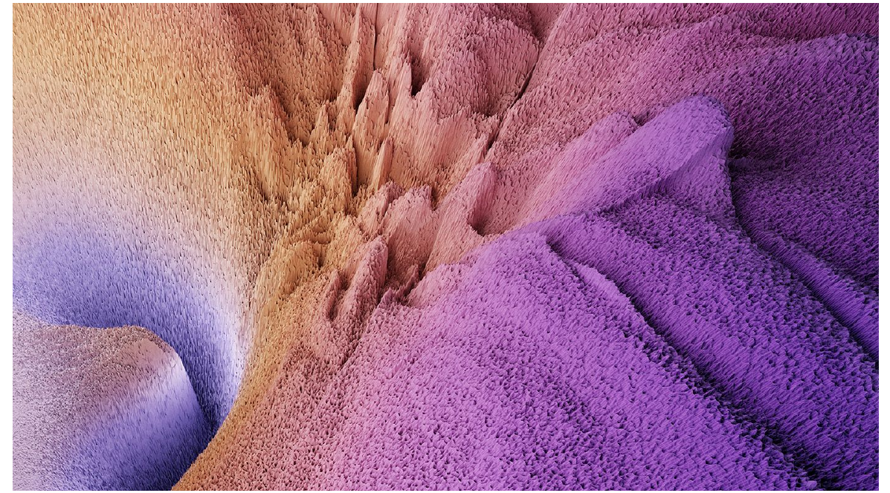
Loss surface of a trained network · losslandscape.com
All You Can Feel Is the Slope
No map. One local reading: which way is down.
Look, Step, Repeat
- Start anywhere.
- Feel which way the score drops fastest.
- Take a step that way.
- Repeat until stepping stops helping.
Gradient descent. Every large model is trained this way.
Steps Too Small
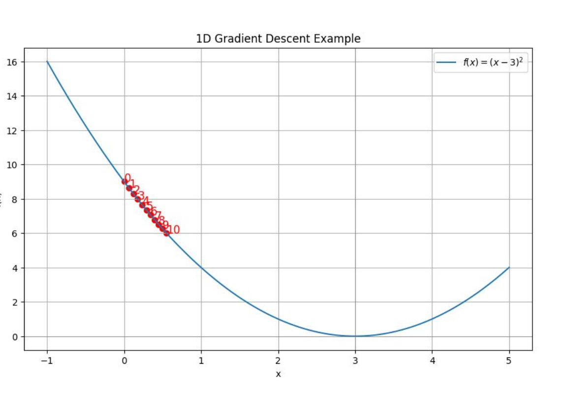
Ten steps, almost no progress. Correct direction, wasted time.
Steps Too Large
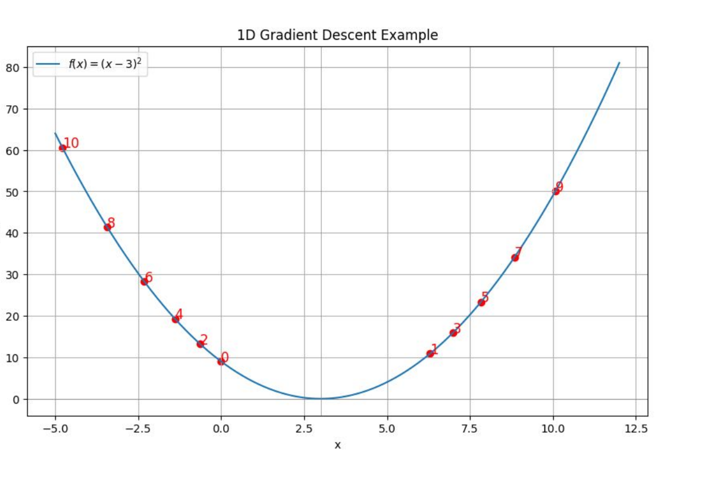
Each step overshoots the valley and lands higher than the last.
The Step Size Is a Choice
Too small
Slow. Weeks of chips for one run.
Too large
The score climbs instead of falling.
Called the learning rate. Nobody derives it. It is tuned.
Two Dials at Once
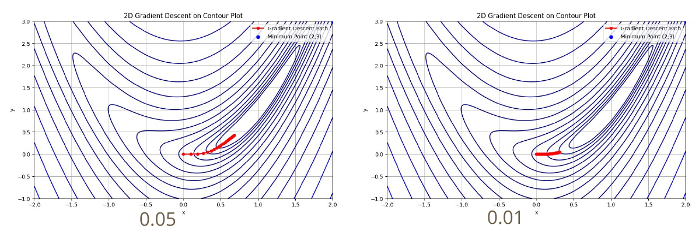
Same landscape, same start. Left takes bigger steps than right.
Where You Start Matters
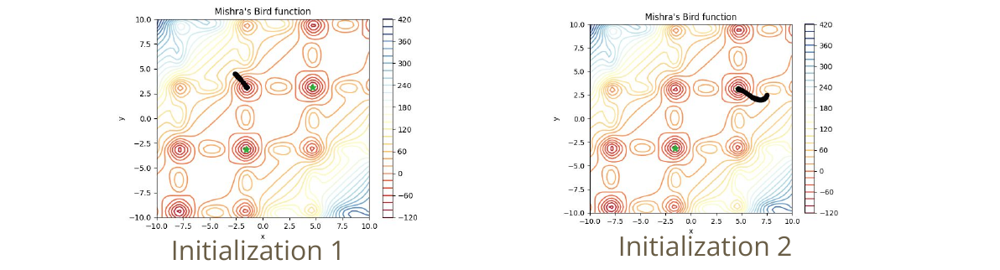
Two starting points, two different valleys. So run it several times.
The Ground Is Not a Bowl
Downhill search settles in whichever dip it fell into.
Too Much Data for One Step
Sampling instead of totalling: stochastic gradient descent.
Downhill Search in Five Lines
- No formula once the dials are many
- Feel the slope, step, repeat
- Step size decides speed and stability
- Restart from several points
- Sample the data, do not total it
Slopes are computed by the software, never by hand.
Drawing the Line
When the answer is a label, not a number
Number or Label?
Regression
Answer on a scale. Revenue, weight, days.
Being close counts as good.
Classification
Answer from a short list. Spam or not, pass or fail.
Close means nothing. Right or wrong.
Same recipe. Different loss, because the answer changed shape.
Two Clouds, One Line
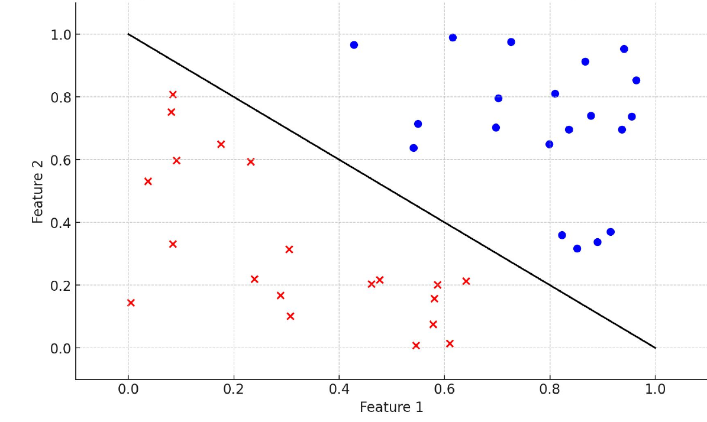
Two measurements per customer. One line splits the labels.
Still a Weighted Sum
- Score above zero: one label
- Score below zero: the other
The same machinery. A line, then a verdict on its sign.
Counting Mistakes
Simplest loss there is: the number of examples the line gets wrong.
A Score With No Slope
A staircase has nowhere to feel downhill. The count is unusable as a guide.
Many Lines Work
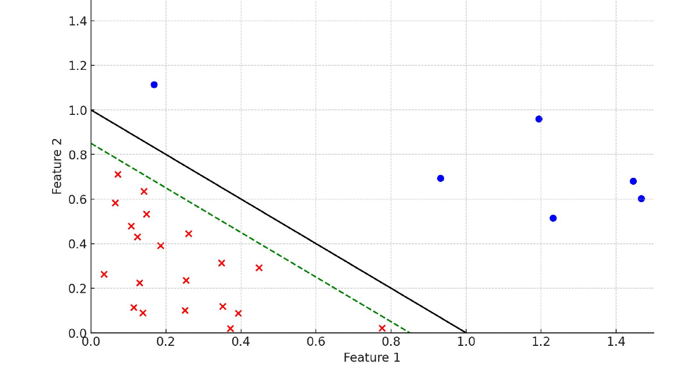
Both lines score zero mistakes. The loss cannot choose between them.
Prefer the Widest Gap
Cortes and Vapnik, 1995 — support vector machine
Sometimes No Line Works
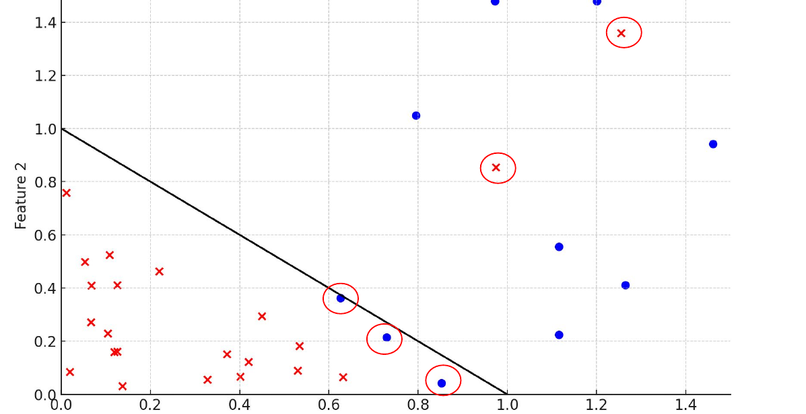
Circled points sit on the wrong side of any straight line you draw.
Then Allow a Few Mistakes
- Demanding perfection returns nothing at all
- Instead: charge a penalty per violation
- Wide corridor, small penalty bill
Real data overlaps. A method that insists on a clean split is unusable.
Soft Answers
A line, plus a squash
Hard Answer, Soft Answer
Hard
“This customer will churn.”
No room to act differently.
Soft
“Churn risk 72 percent.”
Rank, triage, set a threshold.
A weather forecast says 70 percent, not “rain”. That is the useful shape.
Probably Red, Certainly Blue
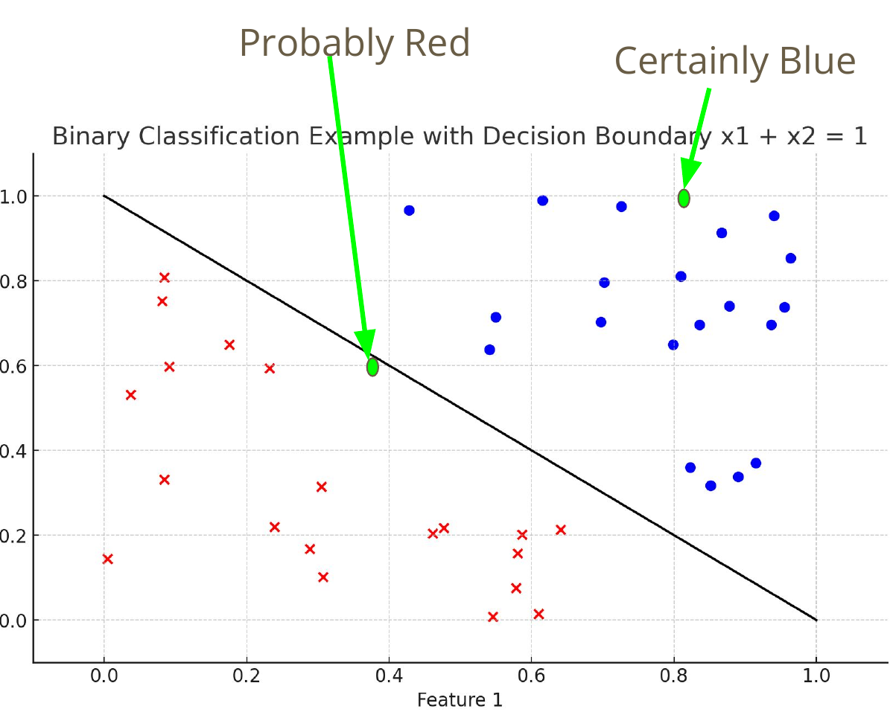
Distance Is Confidence
The weighted sum already carries confidence. It is just not a probability.
Squash It Into a Probability
An S-shaped squash maps any score onto the range zero to one.
Logistic Regression
- The dials are the same weights as before
- The output is now a probability
The name says regression. The job is classification.
A Line Plus a Squash
Scoring a Probability
| You said | It happened | Penalty |
|---|---|---|
| 90 percent rain | rain | tiny |
| 50 percent rain | rain | moderate |
| 5 percent rain | rain | enormous |
Penalty depends on how much probability you gave the thing that occurred.
Confident and Wrong Is Expensive
Called cross-entropy. Ruling out the truth costs the most.
Now the Score Has a Slope
- Counting mistakes: a staircase, no downhill
- Penalising probabilities: a smooth surface
- Nudge a weight, the penalty moves
This is why classifiers output probabilities. The search needs a slope.
More Than Two Labels

CIFAR-10 · Krizhevsky, 2009 — ten classes
One Score per Label, Then Normalise
The two-label squash, generalised. One number per label.
Reading the Errors
Which mistake is cheaper?
Where to Put the Threshold
Two Ways to Be Wrong
False alarm
Flagged, but clean.
Wasted inspection. Annoyed customer.
Miss
Cleared, but faulty.
Recall, lawsuit, undetected fraud.
One threshold trades one for the other. You cannot cut both.
Precision and Recall
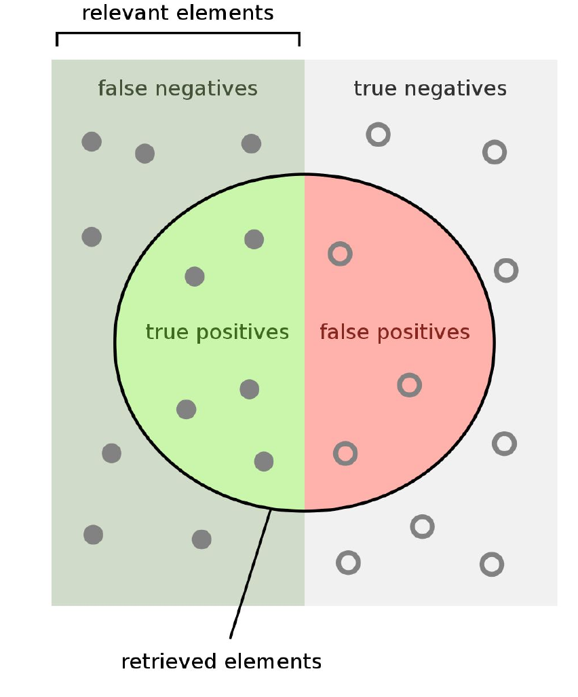
Precision
Of the ones you flagged, how many were real?
Recall
Of the real ones, how many did you flag?
Diagram after Wikipedia, “Precision and recall”
Which Mistake Is Cheaper?
| Application | Prefer | Because |
|---|---|---|
| Disease screening | false alarms | a second test is cheap |
| Spam filter | misses | a lost invoice is not |
| Fraud alert | false alarms | a call costs less than the loss |
| Loan approval | neither cheaply | regulated both ways |
Sweep the Threshold
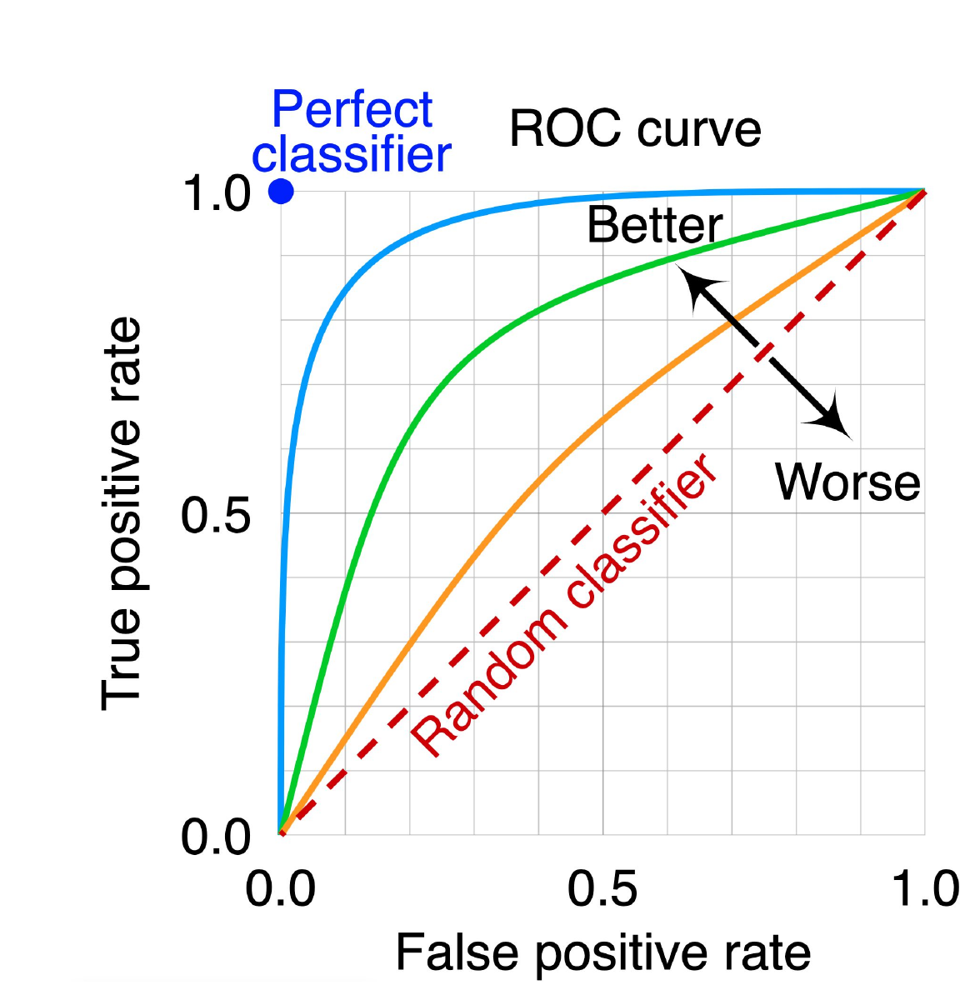
- Each point: one threshold
- Up and left is better
- The diagonal is coin-flipping
Area under the curve grades the model, not the threshold.
Diagram after Wikipedia, “Receiver operating characteristic”
Accuracy Is a Trap
One part in a thousand is defective.
It catches nothing. Ask for the catch rate, never the accuracy.
Stacking the Boxes
Where deep learning comes in
Straight Lines Run Out
Stack the Boxes
Each circle is a weighted sum followed by a squash. Nothing new inside.
Same Four Lines
- Examples. Photographs and their labels.
- Family. A stack of boxes with a billion dials.
- Loss. Penalty on the probability given the true label.
- Search. Feel the slope, step, repeat.
Deep learning changed line two. Lines one, three and four are unchanged.
Any Shape, In Principle
Universal approximation · Cybenko, 1989; Hornik, 1991
Depth Buys Reuse
Nobody programmed “edge”. The search found it useful.
Sharper Pictures
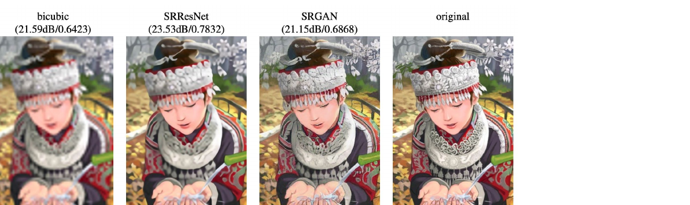
- Examples. Blurred image, sharp image
- Loss. Pixel-by-pixel difference
Ledig et al., CVPR 2017 — SRGAN
Finding Things in a Photo
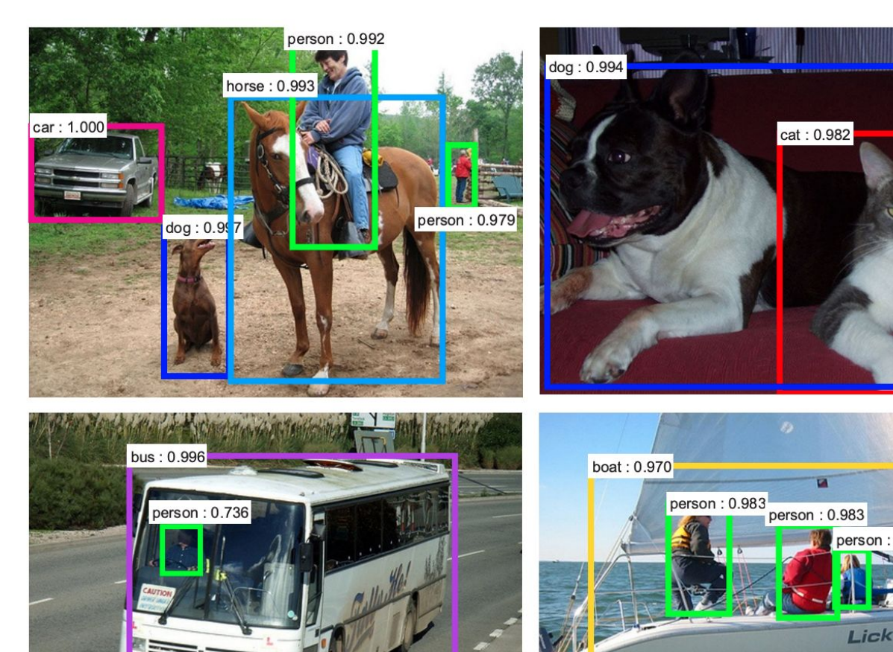
- Examples. Image, box, label
- Loss. Box error plus label penalty
Two answers at once, so two penalties added together.
Ren et al., NeurIPS 2015 — Faster R-CNN
Filling In a Blank
How language models are trained. The text is its own answer key.
You Might Not Need It
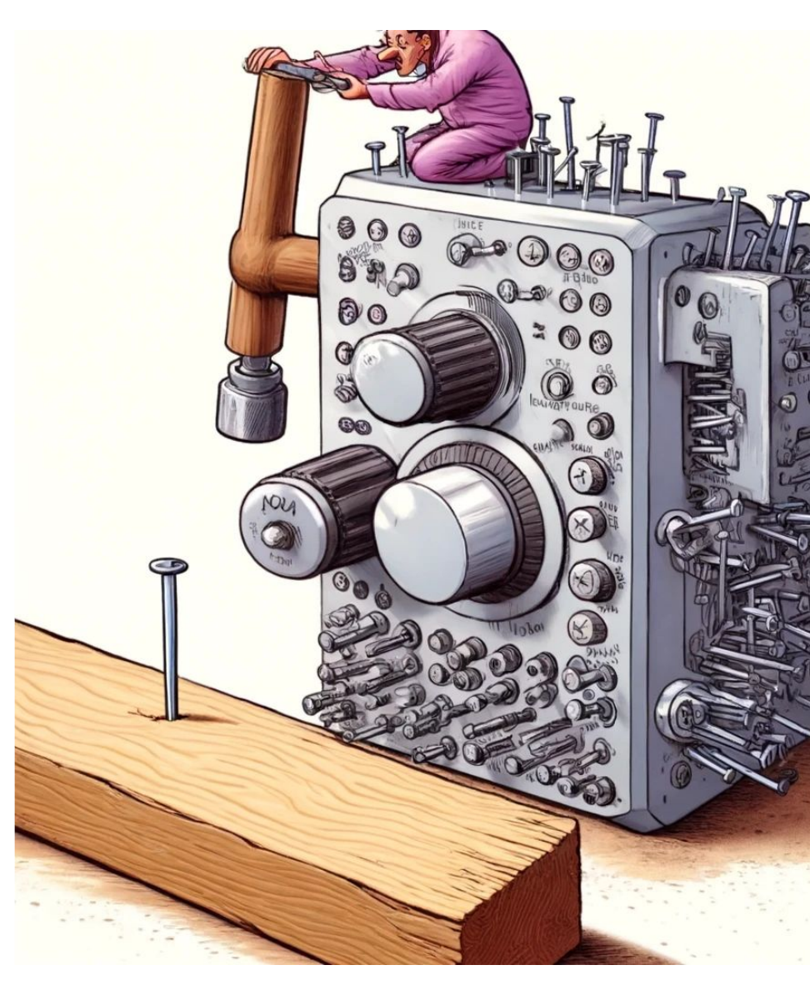
- Simple problem, simple model
- A table of numbers rarely needs a network
- Costs land on you every month
Deep learning is a tool, not a badge.
Today in Five Lines
- Training is downhill search, not solving
- Step size and starting point are choices
- Classification draws a line, then squashes it
- A probability out gives the search its slope
- Deep learning stacks the same box, many times
Take the slope.
Then squash it.